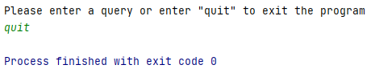

Data Is Plural Project
Overview
This project is a console based data querying program that is based on a public data collection project
called Data Is Plural. Data Is Plural is a weekly newsletter
of "curious and useful" datasets published by Jeremy Singer-Vine since
October 21, 2015. The program interacts with a master data set which contains summary information and links to the
many "curious and useful" that have been published as part of the Data Is Plural newsletter. At the start of the
program the master data set is parsed and saved as a custom DataSetList object which contains each of the data sets
stored as custom DataSet objects. The user is then told how to interact with the program via queries and the program
parses and responds to any valid queries the user provides. The program is terminated when the user types quit into
the console.
Main Application
Parsing the Data
The data sets are saved as a CSV file and at the start of the program the CSV file is parsed. The CSV file contains
summary information about each of the contained data sets including the headline, text describing the data set and links
to the referenced data sets. These attributes (title, description, url) serve as the source for queries made by the user.
The CSV file is opened and parsed into a DataSetList object called listOfAllDataSets. This dataSetList object is then
used as the source of all user's queries of the data sets.
User Interaction
Once all the information about the data sets is saved, the interactive part of the program begins and a message explaining
how the program is used is printed to the user. The user is able to make three types of queries; query on the
title, description or URL. These three types of queries will check all available data sets stored in the listOfAllDataSets
to see if they contain the given keyword in the field of the query type. To specify the query, first the type of query
is typed then the keyword to be searched for is typed.
A scanner is used to first check if the user has typed "quit", exiting the program. Then the user input is parsed
by counting the number of queries based on the number of words the user entered. If the user entered more than two, the
maximum number of queries, queries then the program prints, "Only two queries are allowed at a time." and allows the
user to re-enter their query. If the user correctly enters one or two queries, the queries along with the listOfAllDataSets
is passed to the processQueries function.
The processQueries function checks if the first word of a given query is one of the allowed types (title, description, url).
It then calls on the relevant get method from the listOfAllDataSets and returns a DataSetList containing all the data
sets that match the user's queries. The program then formats and prints all the data sets returned to the console and
asks the user for another query.

Console Interaction
As an example of the behavior of the program, here is the result if the query, "title food" is entered.

There are many more results from this query but it is truncated here for simplicity. Now, say we only want those data
sets that contain links to governmental websites. We can narrow the search by adding a url query to our previous query.
Here are the results for the two queries, "title food url .gov".

Again the results results are truncated for simplicity. If the type of query does not match any of the three allowed
query types then the program will print an error message and allow the user to try again.
If more than two queries are given, again an error message is printed and the user may re-enter a query.
This continues until the user types, "quit" at which point the program will exit.

Custom Objects
DataSet
The DataSet class represents an individual data set. Each object contains the title, description, links, date, and
hatTips of a given data set. The title, description and links are used to respond to queries. The date is used to sort
the response to a query by ordering the data sets in chronological order from oldest to newest. The hatTips of the data
set is not used as a query type however is still stored in the DataSet object. The title, description and links are set
in the DataSet constructor and each have a getter function. Date and HatTips both have getter and setter functions. The
DataSet class also has overridden compareTo, equals and toString functions. The compareTo function compares DataSet objects
by date, then title. The equals method considers two DataSets equal if they have the same date and title. The toString
function formats the data set by its date, title, description then all links.
DataSetList
The DataSetList is a dataStructure that extends the ArrayList class and stores DataSet objects. The DataSetList class
has three query functions, one for each of the allowed types of queries. These functions are getByTitle, getByDescription,
and getByURL. Each of these functions first checks if the keyword is valid and throws an IllegalArgumentException if
it is not. Then it checks all DataSet objects stored in the DataSetList and adds any DataSets that contain the keyword
in the specified query field and adds them to a new DataSetList object. Finally this new DataSetList with all the DataSets
that match the query is returned.

Date
The Date class is a class that simply represents a year month and day date. This class is used to validate that a date
provided for a given data set is a valid date and allows DataSet objects to be compared by their chronological dates.
The Date class constructor takes a year, month and day as its parameters and checks whether they represent a valid date.
The validating of dates is done through two methods that both check whether the month is from 1-12 and that the day
value is appropriate given the month, some months having 31 days others having different values. The first method checks that the
day is valid in a common year and the second method checks if the day is valid during a leap year.